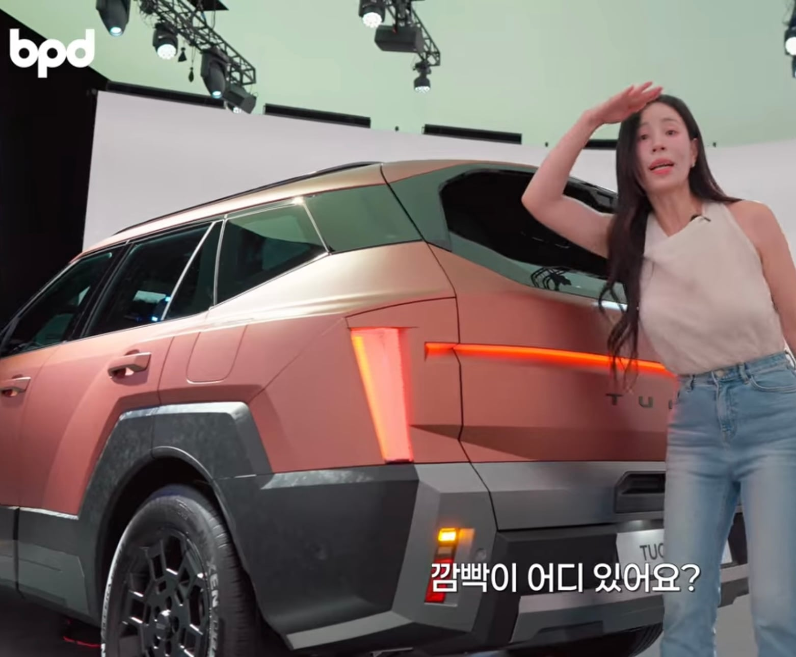
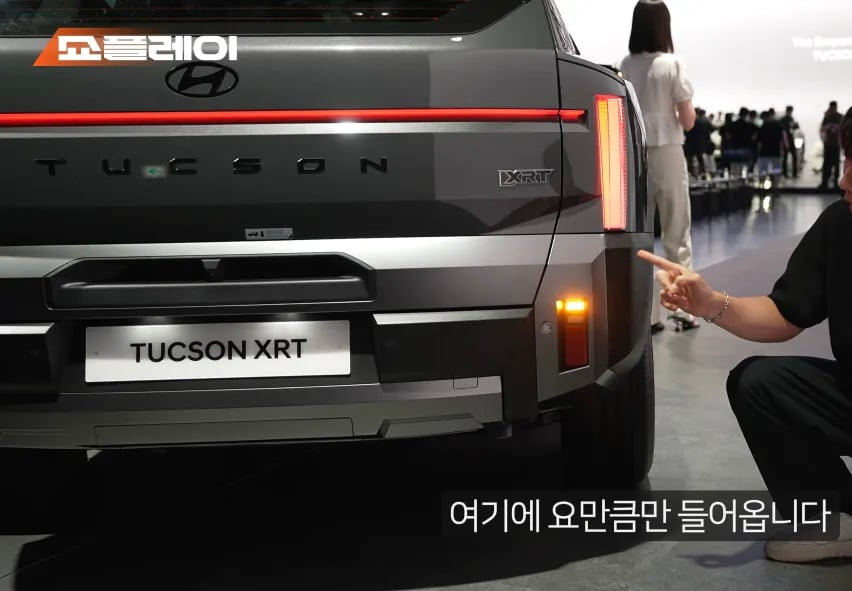
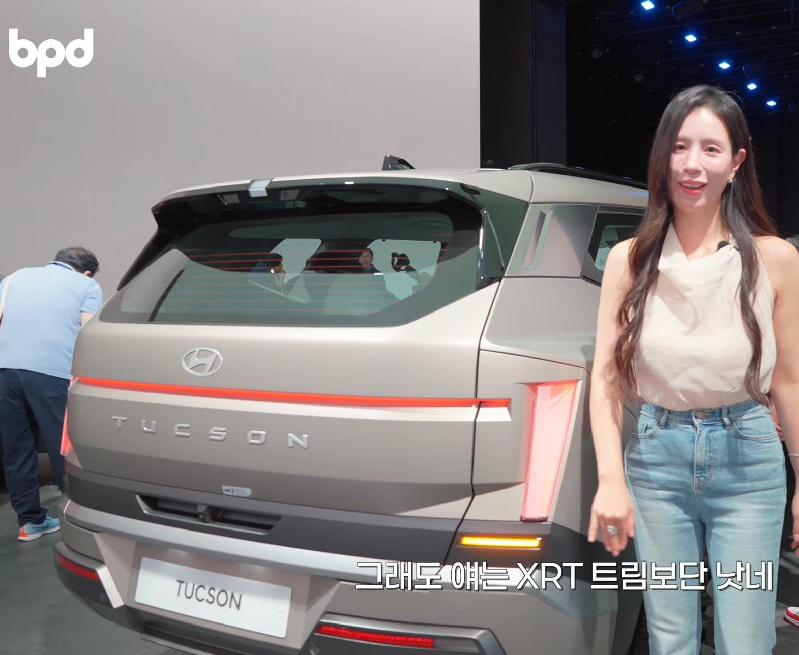

현대 투싼의 신형이 공개되었는데 후면 방향지시등이 저러면 뒷차가 운전하면서 저걸 어떻게 보라는 건지 모르겠다는 부정적인 반응 속출 중.
내가 보기엔 그나마 일반형 모델은 좀 나은데 XRT 트림 저렇게 만들어 놓은 건 진짜 무슨 생각인가 싶고 대체 뭐하자는 건지 모르겠음ㅋㅋ



현대 투싼의 신형이 공개되었는데 후면 방향지시등이 저러면 뒷차가 운전하면서 저걸 어떻게 보라는 건지 모르겠다는 부정적인 반응 속출 중.
내가 보기엔 그나마 일반형 모델은 좀 나은데 XRT 트림 저렇게 만들어 놓은 건 진짜 무슨 생각인가 싶고 대체 뭐하자는 건지 모르겠음ㅋㅋ
??? : 깜박이 쓰지도 않는데... 대충 코딱지만큼 만들어서 원가 절감하죠?
[올해의 우수 사원]
Gv70도 낮에보면 존나 안보임 ㅅㅂ
방향지시등을 대체 왜 저지랄로해놓고 차값은 씨발 존나비싸고 아반떼 디자인부터 존나 불호
깜빡이 이씨발 아래쪽에 처박고 쥐좆만한게 박아넣어서 안보이게 만들고 왜 이짓거리 하는지 모르겠음
등화관제 기준이 없나??
자동차 후면 방향지시등(깜빡이)의 지상 설치 높이에 관한 법적 기준은 다음과 같습니다.
대한민국 법령인 자동차 및 자동차부품의 성능과 기준에 관한 규칙 (별표 6의17)에 따르면, 공차 상태에서 지상 350mm(35cm) 이상 1,500mm(150cm) 이하의 높이에 발광면이 위치해야 합니다.
설치높이는 있는데 크기 기준이 없나봐

규제... 추가해야겠지?
카니발에서 개 욕처먹은건데 이걸 또 하네
학습능력이 없나
또라이임???????
어짜피 사용 안 하는 사람들이 많으니까 저렇게 하기로 한 건가
카니발만해도 아래에있어서 잘 안보이던데 저건 ㅋㅋㅋㅋ
아니 진심인가? 그랜저, GV70, GV60같은 애들 다 범퍼에서 후미등으로 올려놓고, 신차를 저렇게 낸다고? ㅋㅋㅋ
이것도 페리때 올리려고? 국민들이랑 기싸움 하네
오프로드용 xrt 트림 한정이라 드물겠지
nx4때도 이런말 있긴 했음
무슨 삶은 계란 껍질 깨진거같이 잘잘한거 엄청 붙여놨네. 대충 만들어도 사주니깐 뭐..
안그래도 대가리들이밀고나서 깜빡이키는새끼들 많은데 ㅅㅂ
등화관제등이야?
일반을 위에 올리고 xrt를 밑에 올려야 오해 안할듯한데
캐스퍼도 등 ㅈㄴ밑에잇어서 개짜증나던데 이상한 컨셉미네 현기놈들
며칠 전에 멍 때리고 운전하는데 갑자기 투싼 끼어들길래 급브레이크 밟으면서 클락션 울렸는데 거리 멀어지면서 보니까 미러쪽에서 깜빡이는걸보면 일단 깜빡이는 켜긴했더라. 물론 걔도 뒷차 간격 생각 안하고 들어온건 빡치지만 아니 깜빡이가 어느정도 거리에서 보여야지 나처럼 높은 차는 뭐 보지말고 갖다 밀어버리라는건지 모르겠음
차도 쓸데없이 점점 커지는 것도 마음에 안드는데 가지가지하네 깜빡이 문제 전에도 이랬다가 고쳤던거 아닌가? 왜 다시 저 지랄로 나온거지? 내부에 누가 자꾸 저렇게 넣자는 놈이 있나본데
차 안타고 다니는놈이 디자인만드나 어차피 지는 안타는 차니까 상관없나
아까 목동에서 캐스퍼가 깜빡이도 없이 훅 들어오길래 놀래서 경적 울렸는데 자세히 보니까 범퍼 밑에 있어서 안보이는거였음. 현대 개병신들.
얹어
미친새끼.
의외로 자동차면허 없는 자동차 디자이너가 존재한다
그래서 저게 디자인적으로 미학적으로 존나 이쁘면 모르겠는데
그냥 예로부터 수입차 여기저기 본따 만드는 디자인 지금까지 쭉 유지하는 주제에
저런 병신 같은 걸 디자인 때문에 굴복할 수 없다고 나오는 건지 이해가 안되네.
저따위로 달거면 걍 하나로 합쳐서 없애던가하지.. 왤케 소비자랑 기싸움하는거같지..? 방향지시등 밑에있는거 개좆같으니까 위로 쳐올리라니까 저지랄하고있네
저 차 산놈들만 불편해지는거지 깜빡이 켜봐야 켠지도 모르니까 괘씸해서 양보 안해줄텐데 ㅋㅋ
운전 ㅈ같이하는놈들이 비깜도 안키고 막 세우고 방향등 안 키고 차선 막 바꾼다고
제조부터 저따위로 하면 어떻게 하냐...
차가 씨발 어떻게 갈수록 커지고 등도 좆같아지냐 씨발새끼들이 크기좀 제발 그만좀 키워라
GV70 방향지시등 페리 전후 차이 심함
쟤네들 왜 자꾸 후방지시등 갖고 저러지? 내가 모르는 무슨 트렌드 같은 게 있는 건가.
깜박히 좆만해도 램프가 개밝으면 시인성 또 오지는 경우도 있어서 상관없는데
저렇게 그랜져마냥 밑에다가 하는게 병신같음
빨간색으로 깜박이는것도 개빡침
디자인이고 뭐고 이건 규칙인거잖아 ㅅㅂ
트림별로 왜 다른거지.. 아예 디자인을 다르게 한 건 도대체 왜..
얼마나 기아를 팔아주고 싶은건지 감도안옴;
자동차에 led 박고나서 디자인이 점점 좆 같아진 느낌이야
빨건거로 깜빡이 한 씹새끼들도 도로의 테러범인데 저건 더 하네 ㅅㅂ
위에 자리 남는데 왜 자꾸 아래에 박냐고
차라리 저 세로 정지등 을 반으로쪼개서 정지등이랑 깜빡이보여주지
할마니....?
밑에도 심하다 느꼈는데 위에 뭐냐? ㅋㅋㅋㅋ
그랜저 후방 깜빡이 안보인다고 그리 욕을 처먹고도
와 이분은 점점 세월을 정통으로 맞으시네
범퍼에 뭐 붙이는거 시인성은 떨어지는데 파손율은 높고 가격만 올라서 개 별로임.
아니 브레이크등 윗쪽 한 1/4만 잘라다 박으면 되는걸 왜...